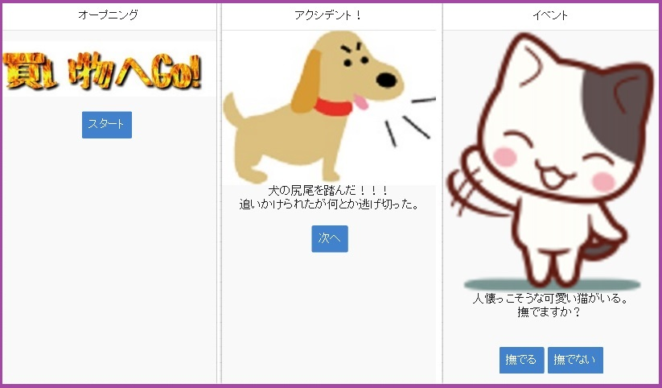

Product

職業訓練校にて、指示により1日で作成。
1ページでのレイアウトとの指示もあり、バックグラウンドをグラデーションにすることにより、
ページ内での変化を付けた。
また、QRコードを読み込むことで地図を表示できるようにし、スマホでのMAP確認も簡単にした。
使用言語：HTML・CSS
職業訓練校にて2週間で作成。
各商品の詳細情報へのリンク及び詳細情報でのコメント投稿・表示を可能にした。
また、コメントが投稿されることで評価平均点も自動的に更新される。
使用言語：HTML・CSS・RubyOnRails
職業訓練校にて3名グループで作成。
各担当者の累計や月ごとの営業成績をグラフで表示したり、顧客リストを作成したりした。
また、社員IDでログインしないと編集できない仕組みにした。
使用言語：HTML・CSS・RubyOnRails
簡易スマホアプリ

monocaを使用したアンドロイド用アプリ。
簡易的なアドベンチャーゲームとなっており、クリア後に広告が表示されるように作成。
画像は全てフリー素材を使用し、オリジナルロゴなどを作成して組み込んだ。
ダウンロードURL：https://goo.gl/3fD0iQ
使用言語：HTML・CSS・Javascript